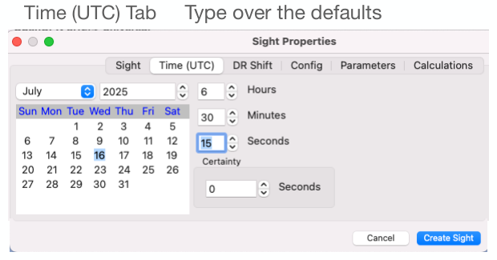

| Previous | Contents | Next |
Altitude sights and coastal navigation · Page 8 of 70
Use Case 1 SW of Hawaii UTC 16 Jul 2025
1. Create Sight: Sight Properties > Time (UTC) Tab
 |
| Open illustration at full size |
Time (UTC) Tab (Required)
Must be the exact moment of your sight measurement at UTC. Know the time zone you are taking your sights from. Know your watch error and Add (slow) or Subtract (fast) it to your watch time. Date and Time defaults to the system clock date & time and time zone when a New sight form is opened. Date & Time needs to be the UTC date & time. Example: twilight sight is recorded at 20:25:35 April 22 at UTC-4, also known as ZD+4. The UTC is April 23, 20xx and UTC is 00:25:35. The next day!
Time (Hours, Minutes, Seconds) needs to be UTC after accounting for Watch error. Be aware of Daylight savings time. There is no Daylight Savings time for UT/ UTC. A digital watch or quartz watch with UTC and local time is best. Be sure to manually adjust Time to correspond with the exact UTC moment the sight was taken. Example: If your quartz watch is 5 sec Fast, then convert to UTC and subtract 5 sec. If your watch is 1 minute 10 seconds slow, then ADD 1 minute 10 seconds to your UTC.
Recording: In preparation, set the stopwatch and record UTC time. When the sight is taken, say “Mark”, so the assistant can record stopwatch time and the sight body and altitude, or if you are solo, try using a recording timer app on your cell phone with a wired microphone. A plot of stopwatch time against Hs can show outlier sights. A new feature for 2.8.5.9 is that you can copy and paste the UTC time identified on the Celestial Sights form. An example will be shown.
Time Certainty: default is 0 seconds which shows a single darker line in the COP. A time Certainty of > 0 shows two darker lines, equivalent to that many seconds apart. For Lunar Sights, Time Certainty is used to bracket your watches's +/- error. The default of 56400 sec can be changed. A COP or LOP is not shown for Lunar Sights. You can duplicate The lunar sight and EDIT the duplicates to type = altitude and see the COP/LOPs.
| Previous | Contents | Next |